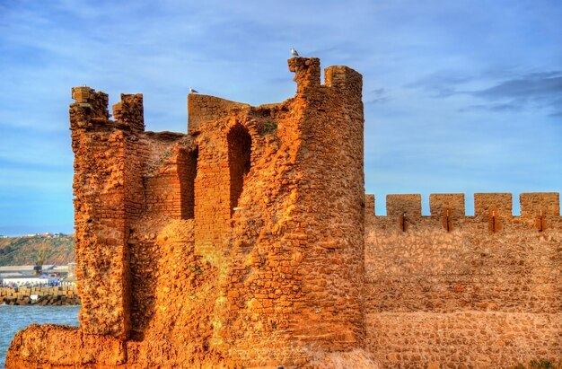
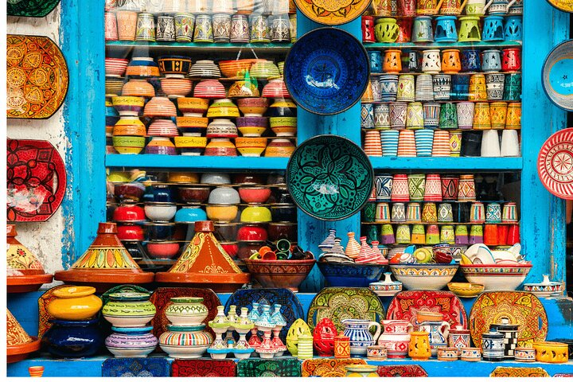
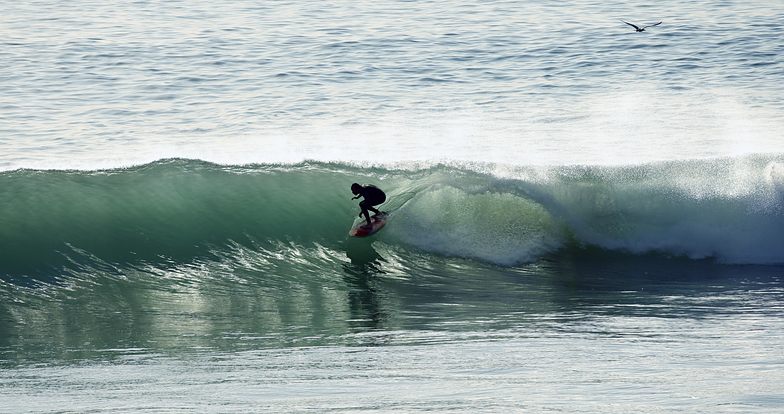
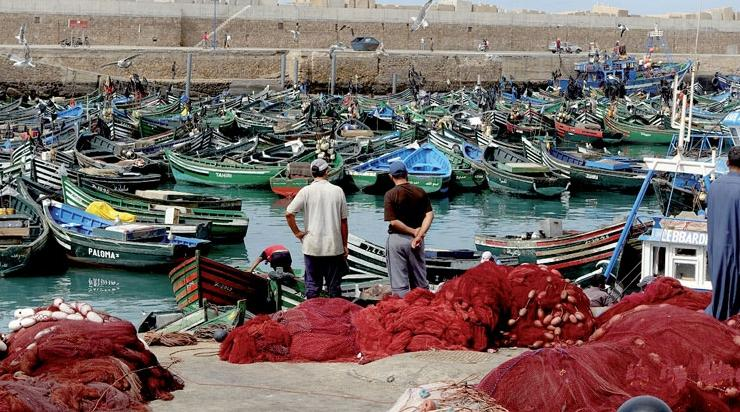

Activités touristiques
Entre océan Atlantique, médina médiévale et poteries millénaires, Safi dévoile ses trésors authentiques.

CultureChâteau de Mer — Dar el Bahar
Forteresse portugaise du XVIe siècle construite sur un rocher face à l'Atlantique. Monument historique national abritant des collections archéologiques.
 Culture
Culture
Médina de Safi
L'une des médinas les mieux préservées du Maroc, entourée de remparts du XVe siècle. La Grande Mosquée du XIIe siècle et la Kechla en sont les joyaux.

ArtisanatColline des Potiers — Kechla
Safi est la capitale marocaine de la poterie avec plus de 300 ateliers actifs. La céramique bleue et verte safiote est exportée dans le monde entier.

NatureSurf — La Vague de Safi
La vague "Safi Right" est l'une des meilleures d'Afrique, pouvant atteindre 5 à 6 mètres. Safi accueille des compétitions internationales de surf chaque année.

NaturePort de Pêche de Safi
Premier port sardinier du Maroc — les barques colorées rentrent chaque matin chargées de sardines fraîches. La criée à l'aube est un spectacle authentique.
 Gastronomie
Gastronomie
Sardines Grillées de Safi
Safi produit plus de 50% des conserves de sardines du Maroc. Les déguster fraîches grillées sur le bord de mer, marinées à la chermoula, est une expérience unique.
 Nature
Nature
Côte Atlantique
Des falaises de grès rouge aux plages sauvages, le littoral de Safi offre des paysages atlantiques spectaculaires. Le coucher de soleil depuis la corniche est inoubliable.
 Artisanat
Artisanat
Art de la Céramique Safiote
Les maîtres potiers de Safi perpétuent un savoir-faire ancestral : façonnage au tour, décoration aux oxydes métalliques, cuisson au four à bois traditionnel.